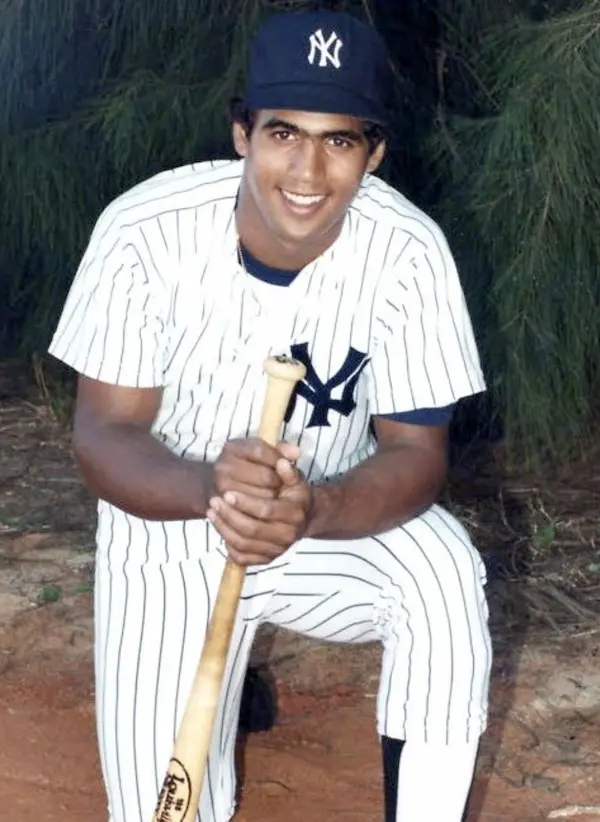

Stan Javier
Career Highlights & Facts
(Facts are AI-generated and may require verification)
- Named after a legendary Hall of Fame teammate of a father who also played in the major leagues.
- Hit the first home run in the history of interleague play.
- Set an American League record for most defensive chances by an outfielder without committing an error.
Would you like to find out more about Stan Javier?
Player Biography
Stan Javier January 4, 2012 / in BioProject - Person Parent-Child Dominican Republic 2001 Seattle Mariners , Dominicans in the Major Leagues / by admin This article was written by Richard Cuicchi Stan Javier’s baseball heritage included his former major-league father and a Hall of Fame teammate of his father’s. One might think that situation would propel a youngster from the Dominican Republic to relentlessly pursue a major-league career for himself. Instead, baseball was viewed by Javier as just another sport he played while growing up, and even as he entered pro baseball as a 17-year-old, he still hadn’t fully set his sights on reaching the big leagues. Yet Javier did indeed reach the major leagues and played in 17 seasons with eight different teams. He spent the better part of his career fighting for a full-time job as an outfielder. Whether he played regularly or as a role player off the bench, he routinely demonstrated his value to the team with his solid defense, speed on the bases, ability to switch-hit, and versatility to play all outfield positions. He played on six postseason teams, including the 1989 World Series champion Oakland A’s. Born Stanley Julian Antonio Javier on January 9, 1964, in San Francisco de Macoris, Dominican Republic, he was the son of Julian and Ines (Negrin) Javier. The fourth of five children, he had a brother and three sisters. 1 Julian Javier had just finished his fourth major-league season with the St. Louis Cardinals when Stan was born. Julian was the second baseman of the 1963 National League All-Star infield that also included Bill White , Dick Groat , and Ken Boyer . Stan was named after another of his father’s famous teammates, Hall of Famer Stan Musial . 2 The elder Javier in 1960 had been the third Dominican player to reach the major leagues, following Ozzie Virgil Sr. and Felipe Alou . Stan was among the first 92 players from the Dominican Republic to reach the majors during 1956 to 1984. By the end of the 2016 season, the number of Dominican players had mushroomed to a total of 669 major-league players from the tiny country. 3 Organized amateur sports leagues were not prevalent during Javier’s time growing up in the Dominican Republic. Youngsters played a lot of street ball, although he did play in the Roberto Clemente League, which was comparable to Little League in the United States. He played baseball at La Altagracia High School, but similarly the organization of high-school team sports was sporadic. 4 Javier recalled that he didn’t get much coaching in baseball skills from his father, since baseball was just another sport he played. He said, “As a youngster I didn’t know I wanted to be a baseball player. I participated in whatever sport was in season, mostly unorganized. I probably played more basketball than baseball while growing up. It was kind of by accident that I landed in baseball.” 5 (Javier’s interests in basketball were resurrected after his baseball playing career ended.) A natural right-handed hitter, Javier taught himself to switch-hit, because his opponents in pickup games insisted he hit left-handed so they wouldn’t lose their ball on a small playing field. It was a skill that became a critical asset during his pro career. By the time he was 15 or 16 years old, he began to show promise as he faced tougher competition. He refined his game with coaching assistance from Jose Garcia, who had previously worked with professional players. However, since there weren’t any pro scouts attending his games, Javier’s father, by then retired as a player, decided to take him to Florida for spring training in 1981, and arranged tryouts with several major-league clubs. 6 After the tryouts the New York Mets, Pittsburgh Pirates, and St. Louis Cardinals wanted to ink Javier to a contract. The Javiers agreed to sign with the Cardinals because of Julian’s prior relationship with the club. The Cardinals signed 17-year-old Stan as a nondrafted free agent on March 26, 1981. 7 Javier returned to the Dominican Republic to finish out his high-school year and then reported to Cardinals affiliate Johnson City in the Appalachian League. He wore uniform number 6, Stan Musial’s number. 8 His two years with Johnson City were marked by .400-plus on-base percentages and few errors in the field. He was named to the league’s postseason all-star team in 1982. Javier said of his time in the Cardinals system, “Coaches George Kissell and Johnny Lewis helped me tremendously during those first years. I had a good attitude, and I hit it off well with those guys.” 9 Despite his early success, Javier said, he was not yet thinking about playing in the major leagues. “When I was playing in the rookie league, I thought I was in a good place at the time. I was having fun playing ball. I wasn’t worried about my future. As a kid, I had not talked with my dad about a baseball career, so there was no pressure from him to reach the majors.” 10 On December 14, 1982, Javier was traded by the Cardinals with Bobby Meacham to the New York Yankees for three minor-league pitchers. One story had it that the Yankees owed the Cardinals for giving up Willie McGee in a deal the year before. However, Cardinals GM Joe McDonald said the trade had nothing to do with the McGee trade. 11 On the other hand, The Sporting News in 1985 reported that the Javier-Meacham trade to the Yankees was indeed related to the McGee deal in 1981, as a condition for George Steinbrenner to back Cardinals owner August Busch’s quest to fire Commissioner Bowie Kuhn . 12 Javier spent the entire 1983 season with Greensboro of the Class-A South Atlantic League, where he began to acquire a label as a top organizational prospect by hitting .311, with 12 home runs, 77 RBIs, and 33 stolen bases. Greensboro manager Carlos Tosca was a big influence in his improvement in hitting. Javier was rewarded by being placed on the Yankees’ 40-man roster for 1984. 13 Along with Brian Dayett and Otis Nixon , Javier was considered among the best outfield prospects by the Yankees. 14 He broke spring-training camp with the Yankees in 1984 because outfielder Steve Kemp was injured. Javier wound up staying with the Yankees for the month of April because of injuries to Dave Winfield and Ken Griffey Sr. Of that brief stint with the Yankees, Javier recalled, “I was waiting to be sent down to the minors, but the Yankees kept me around to play defense when other players got hurt. At one point, I requested to be sent to the minors so I could play every day. My teammate Lou Piniella said I was probably the only player to ever request a demotion.” 15 Javier made his major-league debut as a 20-year-old on April 15, 1984, against the Chicago White Sox when he replaced Dave Winfield in right field and went hitless in one at-bat. He played in seven games for the Yankees in April and spent the balance of the season between Double-A Nashville and Triple-A Columbus. After the 1984 season, the Yankees reluctantly bundled Javier with several other prospects ( Tim Birtsas , Jose Rijo , Eric Plunk ) and Jay Howell in a trade with Oakland for Rickey Henderson , Bert Bradley , and cash. The deal was prompted by the A’s lack of confidence that they could retain Henderson after the 1985 season. Their director of baseball administration, Walt Jocketty , insisted that Rijo and Javier be part of the deal and remained steadfast on this condition during negotiations. 16 An analysis of the biggest deals in major-league history, in terms of the greatest swap of future major-league talent, ranked this trade among the top four when using the Win Shares metric. The trade was cited for being the model for deals involving prospects for superstars entering free agency. 17 After being among the league leaders in stolen bases, walks, and runs scored with Double-A Huntsville in 1985, Javier played parts of the 1986 and 1987 seasons on the A’s major-league roster. However, he hit poorly (.202 and .185) during both campaigns. The A’s decided not to retain center fielder Dwayne Murphy in 1988, instead using Javier and Luis Polonia in a platooning role. In his first full major-league season, Javier played in 125 games and batted.257, with 2 home runs and 35 RBIs. In his first 48 games, Javier had already achieved career highs in hits (43) and RBIs (18). 18 He was caught stealing only once in 21 attempts during the season, one of the highest percentages (95.2%) in a season for players with at least 20 stolen bases. 19 With a team that included Mark McGwire, Jose Canseco , Don Baylor , Carney Lansford , Dave Henderson , and Walt Weiss , the A’s swept the Boston Red Sox in the American League Championship Series, but then lost to the Los Angeles Dodgers in five games in the World Series. Javier batted .500 in the postseason, collecting three RBIs. He became the seventh second-generation player to play in a World Series. 20 Oakland repeated as American League champion in 1989. Rickey Henderson was reacquired in June, but then Canseco went on the disabled list for a good part of the season, again allowing Javier more playing time. On August 5 in Seattle, he played his first game at second base, his father’s old position, fielding three grounders and helping to turn a double play. Javier batted .248 in 112 games. The A’s swept the San Francisco Giants in the World Series, marked by the Bay Area earthquake, which interrupted the Series for 10 days between Games Two and Three. When many of the A’s players were sending their families back home when the Series was suspended, Javier kept his family and relatives in the area. He said, “They’re going back to Candlestick. They said they were coming here to see the World Series and they’re going to see it.” 21 Javier made just one Series appearance, as a Game Three defensive replacement for Jose Canseco. Javier avoided arbitration with the A’s in January 1990 by signing a one-year contract for $310,000, but on May 13 he was traded to the Dodgers for Willie Randolph . The A’s outfield had become crowded, with Felix Jose replacing Javier as the platoon player for regulars Dave Henderson , Rickey Henderson, and Jose Canseco . Javier welcomed the trade at the time, saying, “It was fun playing for the A’s in some points, I had fun winning a lot; but I wasn’t playing much, so it was good to leave. I consider myself an everyday player. I couldn’t get that chance in Oakland.” 22 With the Dodgers, Javier played with the confidence he gained while in Oakland. In his first six weeks, he was the team’s hottest hitter, with a 12-game hitting streak in June. He finished the season with a .304 batting average in 104 games. He frequently filled in at center field for Kirk Gibson , who was dealing with leg problems after missing the first months of the season. The Dodgers finished second in the West Division. Over the winter, the Dodgers added outfielders Darryl Strawberry and Brett Butler , who were slated for starting roles. Wanting to find a way to get into the starting lineup, Javier figured he could vie for a spot at third base, even though he had never played there. Jeff Hamilton had been the Dodgers’ third baseman in 1988-89, and surgery in 1990 kept him out most of the season. Javier prepared himself for the new position by taking groundballs during the winter in the Dominican Republic. When Dodgers manager Tommy Lasorda was asked about the prospect of Javier playing third base, he said, “Why not? He learns well. He wants to play. Let’s see what happens.” Lasorda acknowledged that Javier had been his best outfielder in 1990. 23 Javier wound up playing mainly as the fourth outfielder in 121 games in 1991; his batting average dropped nearly 100 points, as he was troubled with a sore wrist for most of the season. Javier took his demotion in stride saying, “I know my job. I know I’m the fourth outfielder. I don’t like it, but I’ll make the best out of it and help out where I can.” 24 At one point during the season, he was 0-for-24 in his pinch-hitting appearances. Javier had wrist surgery two days after the season ended. Javier started the 1992 season with the Dodgers but shoulder and elbow injuries kept his playing time down. He managed only five starts during the Dodgers’ first 73 games. Javier recalled about the season, “My aggressive style of play caused me to miss games. The Dodgers knew I could hit, but they ultimately felt I couldn’t be counted on to be healthy.” 25 Consequently, the Dodgers traded Javier to the Philadelphia Phillies on July 2. Javier moved into a starting role with the Phillies, seeing action in 74 games while batting .261 and stealing 17 bases. After the season he became a free agent, and signed with the California Angels for 1993, during which he batted .291 in 92 games. A free agent again after the season, Javier returned to the A’s. With Dave Henderson now gone from the team, Javier was a starter for the A’s in the strike-shortened 1994 season. He hit safely in his first 17 games. After hitting only 13 homers in his eight previous major-league seasons, he showed an unlikely power display when he hit 10 home runs while batting .272 and stealing 24 bases – his best season to that point. Javier re-signed with the A’s for the 1995 season and put together his second consecutive solid year as a starter. He batted .278 with 8 home runs and led the A’s with 36 stolen bases. From May 31 to October 1, he had 28 consecutive steals, an A’s record until Coco Crisp stole 36 straight in 2012. 26 He broke the American League record for most chances (334) without an error by an outfielder, previously held by Brian Downing (330) in 1982. 27 When put in a regular outfield job, Javier was showing major-league front offices he was a valuable player to have around because of his versatility, his reliable glove, and his speed. His ability to switch-hit and bat in the leadoff position were additional pluses. After the San Francisco Giants chose not to re-sign Deion Sanders following the 1995 season, Javier signed a two-year contract, turning down an offer from the Texas Rangers. He began 1996 as the Giants’ regular center fielder, but a hamstring injury ended his season in mid-July. The 1997 season brought new challenges for Javier when the Giants acquired Darryl Hamilton to play center field. Javier won out in a competition with outfielders Darrin Jackson and Marvin Benard for the fourth outfielder spot. When Hamilton missed games early in the season because of thumb and hamstring injuries, Javier ably filled in. Giants manager Dusty Baker later decided to platoon Javier in right field with Glenallen Hill , who had suffered lapses in hitting and defense. 28 Never known for his propensity to hit home runs, Javier hit the first home run in the major leagues’ first interleague game, on June 12, 1997. 29 In the top of the third inning, he hit his round-tripper off Texas Rangers pitcher Darren Oliver . It was only the 34th home run of his career. Throughout the season Javier batted in practically every position in the batting order and was frequently inserted for defensive purposes when he wasn’t starting. Altogether, he appeared in 142 games and batted .286. The Giants finished first in the National League West Division, but lost to eventual World Series champion Florida Marlins in the Division Series. The Giants liked Javier for his versatility and re-signed him as a free agent after the 1997 season. He started 1998 as their regular right fielder. With the Giants later acquiring veteran outfielders Joe Carter and Ellis Burks at the trade deadline and Benard’s offensive breakout that season, Javier’s opportunities for outfield starts during the last two months diminished. In any case, Javier got into 135 games and batted .290. Javier was put on the trading block after the season, with the Giants using him as trade bait to acquire a pitcher. However, teams were unwilling to pick up his $1.7 million salary. 30 He started the 1999 season platooning with Benard in center field, but then emerged as the Giants’ regular left fielder when Barry Bonds went on the disabled list for 10 weeks with an injured elbow. On August 31 Javier was finally dealt to the Houston Astros, who needed a short-term outfielder rental to help win their division. The deal paid off for the Astros. Javier batted .328 in the final month, and Houston finished first in the NL Central Division. Javier started three of the four games in the Division Series, as the Astros lost to the Atlanta Braves. Javier said of his experience with the Astros, “I was a veteran bringing experience to the team. I had been hitting well with the Giants, and I carried over that momentum to the Astros. The Giants no longer had a need for me, so I understood the trade. The Astros played hard, and I liked playing for them. They liked that I could run, play defense, and get good at-bats. The “Killer B’s” ( Jeff Bagwell and Craig Biggio ) were fun to play with.” 31 Over the winter Javier signed with the Seattle Mariners, his eighth major-league team. He was one of six free agents acquired by GM Pat Gillick that altered the makeup of their lineup and contributed to their being in contention most of the 2000 season. 32 Javier was one of seven Mariners outfielders whom manager Lou Piniella mixed and matched against opposing pitchers. By this time in his career, Javier had lost a few steps, but was still a consistent switch-hitter and played solid defense in all three outfield positions. He played in 105 games as the Mariners finished second in the West Division. They defeated the Chicago White Sox in the Division Series, but lost to the New York Yankees in the Championship Series. For the season, Javier batted .275, but he was ineffective in the postseason. The Mariners picked up the option year of Javier’s contract for 2001. A pinched tendon in his left knee limited his play, although he wound up hitting .292 in 89 games. The Mariners won 116 games to win the West Division. They defeated the Cleveland Indians in the Division Series before losing to the Yankees again in the Championship Series. In his sixth year on a postseason team, Javier contributed a home run in the ALCS. During the offseason, Javier, then 37 years old, was faced with a difficult career decision: When is it time to get out of the game? He ultimately decided to retire. Of his rationale, he said, “[Mariners manager] Piniella liked the type of player I was. I liked being treated like a veteran. We were having fun, selling out the stadium every day. Safeco was a big stadium and I took advantage of it as a gap hitter and situational hitter; so it was perfect for me. However, it was becoming harder for me to be 100 percent every day. When I was hurt, I was miserable. I respected the game and when I felt like I couldn’t be 100 percent, I felt it was time to leave. Plus, my children were getting older, and they had become an increasing priority for me. I could have signed for another year and been a ‘lazy’ player, but that was not the type of player or person I was.” 33 During his 17 major-league seasons, Javier batted .269 with 1,358 hits, 57 home runs, 503 RBIs, and 246 stolen bases. He is among the leaders in highest career stolen-base percentage (82.8 percent, minimum of 100 steals). 34 Javier remained active in professional sport endeavors after his playing career. He was the general manager of the Dominican Republic team for the 2006 and 2009 World Baseball Classic tournaments and owned the Gigantes del Cibao baseball team in the Dominican Winter League. He was a special assistant with the Major League Baseball Players Association. As of 2018 he was vice president of the Toros del Este in the Dominican Winter League. 35 Reverting to his passion for basketball as a youngster in the Dominican Republic, Javier founded Liga Nacional de Baloncesto (Dominican National Basketball League) and as of 2018 owned its team Indios de San Francisco de Macoris. 36 Javier and his wife, Genoveva, have three children, Karla, Marcel, and Ines Marie. 37 Javier wound up having a substantial major-league career like his father. Yet there was hardly a season that he didn’t go into spring training battling multiple players for an outfield spot, sometimes even as a backup. He never put up big offensive numbers that made him a cinch for a starting role on any of his teams. Nevertheless he became a valuable member of some very good teams by making the most of his opportunities to get into the lineup due to his style of play. Last revised: October 29, 2022 Sources In addition to the sources cited in the Notes, the author also consulted media and information guides of several major-league teams, and Gardiner White, Sarah. Like Father, Like Son: Baseball’s Major League Families (New York: Scholastic, Inc., 1993), 61-71. Geisler, Paul Jr. SABR BioProject: Julian Javier, sabr.org/bioproj/person/b8bf06ec , accessed March 20, 2017. Nothington, Tom. “Stan Javier Is Making People Believe Baseball Is His Game,” Yankees Magazine , August 4, 1983: 29. Pietrusza, David, Matthew Silverman, and Michael Gershman, eds. Baseball: The Biographical Encyclopedia (New York: Total Sports Illustrated, 2000), 554. Spatz, Lyle. Yankees Coming, Yankees Going: New York Yankee Player Transactions, 1903 Through 1999 (Jefferson, North Carolina: McFarland & Company, Inc., 2000), 233-234. Notes 1 Stan Javier, telephone interview with the author, February 13-14, 2017. 2 “Cards Sign Young Javier,” The Sporting News , April 11, 1981: 46. 3 Baseball-Reference.com. 4 Javier interview. 5 Javier interview. 6 Javier interview. 7 Javier interview. Numerous publications have reported that Javier was 16 years old when he signed his first contract with the St. Louis Cardinals in 1981. Javier said he believes this mistake is likely attributed to his birthday being inadvertently transposed from January 9 to September 1, since the typical Dominican Republic format for dates at that time was dd/mm/yy. 8 “Another Stan the Man?” The Sporting News , August 16, 1982: 43. 9 Javier interview. 10 Javier interview. 11 Rick Hummel, “Cards Preparing for Arbitration,” The Sporting News , January 24, 1983: 40. 12 Dave Nightingale, “Yankees Got More for McGee Via ‘Trade,’” The Sporting News , December 2, 1985: 57. 13 “ ‘84 Looks to be Exciting,” Yankees Magazine , January 26, 1984: 19. 14 Moss Klein, “A.L. East Notebook,” The Sporting News , February 6, 1984: 42. 15 Javier interview. 16 Moss Klein, “Risky Business Has A’s Prospering,” The Sporting News , June 9, 1986: 20. 17 Dave Studeman, “The Biggest Deals of All Time,” Hardball Times , March 30, 2005, hardballtimes.com/the-biggest-deals-of-all-time/ , accessed March 20, 2017. 18 “A.L. West Notebook,” The Sporting News , June 20, 1988: 43. 19 Lyle Spatz, ed., The SABR Baseball List & Record Book (New York: Society for American Baseball Research, 2007), 336. 20 Stan Isle, “Pitching Coach No Longer a Yankee Barometer,” The Sporting News , November 7, 1988: 7. 21 “A.L. West: Athletics,” The Sporting News,” November 6, 1989: 64. 22 Bill Plaschke, “For Dodgers, Rainout Beats Another Loss,” Los Angeles Times , May 14, 1990: C1, C15. 23 “Javier to Pursue Third-Base Job,” The Sporting News , February 4, 1991: 39. 24 “Baseball: N.L. West,” The Sporting News , July 1, 1991: 17. 25 Javier interview. 26 “Crisp’s Club Record Steals Streak Ends at 36,” June 21, 2012, m.mlb.com/news/article/33705134// , accessed March 20, 2017. 27 Pedro Gomez, “A.L. West,” The Sporting News , October 9, 1995: 50. 28 Henry Schulman, “N.L. West,” The Sporting News , June 9, 1997: 43. 29 “Interleague History,” mlb.mlb.com/mlb/history/interleague/ , accessed March 20, 2017. 30 “American League: Toronto,” The Sporting News , March, 22, 1999: 35. 31 Javier interview. 32 “Baseball: Seattle,” The Sporting News , October 9, 2000: 20. 33 Javier interview. 34 Spatz, 335. 35 Javier interview. 36 Javier interview. 37 Javier interview. Full Name Stanley Julian Antonio Javier Negrin Born January 9, 1964 at San Francisco de Macoris, Duarte (D.R.) Stats Baseball Reference Retrosheet If you can help us improve this player’s biography, contact us . Tags Parent-Child · Dominican Republic · 2001 Seattle Mariners · Dominicans in the Major Leagues Share this entry Share on Facebook Share on X Share on LinkedIn Share on Reddit Share by Mail
Career Totals
| WAR | AB | H | HR | BA | R | RBI | SB | OBP | SLG | OPS | OPS+ |
|---|---|---|---|---|---|---|---|---|---|---|---|
| 25.5 | 5047 | 1358 | 57 | .269 | 781 | 503 | 246 | .345 | .363 | .708 | 93 |
Statistics via Baseball-Reference.com
The Original Clue